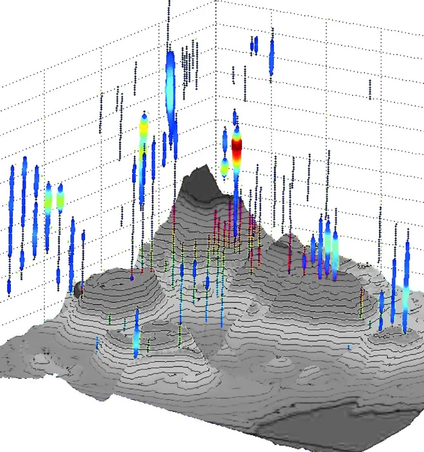
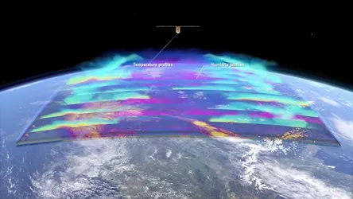
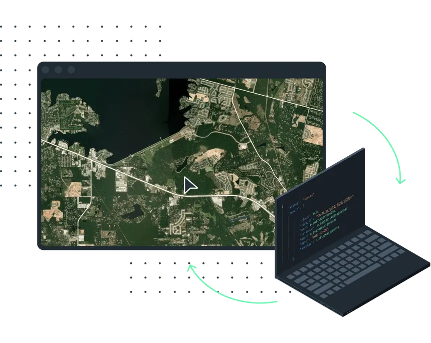

Worked closely with NOAA to help analyze and present data they collected from various
hydrothermal vents sprinkled throughout the northeast atlantic ocean.

Satellite weather data parsing
Aided in data parsing from NASA's recent global weather survey from various satellites.

Satellite connection interface UI development and design
Designed and maintained NOAA satellite connectivity portals for a dozen in-orbit satellites.
